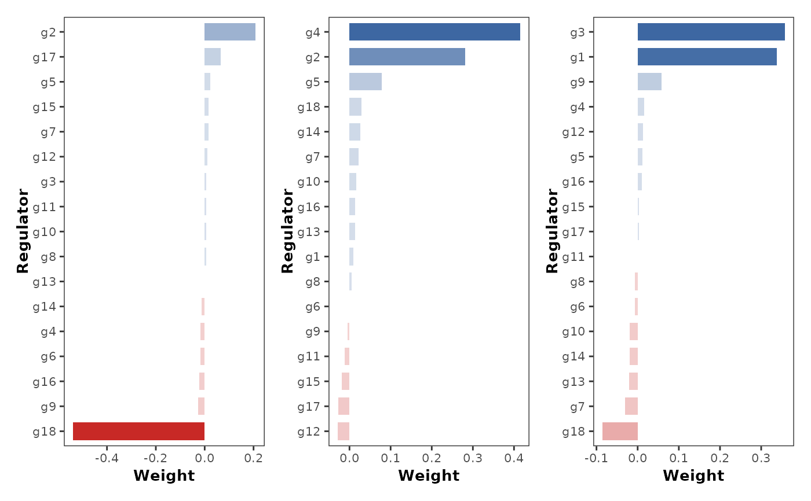
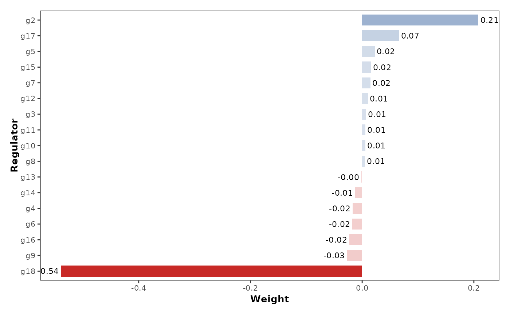

Plot coefficients for multiple targets
Arguments
- data
Input data.
- targets
Targets to plot.
- nrow
Number of rows for the plot.
- ...
Other arguments passed to
plot_coefficient.
Examples
data("example_matrix")
network_table <- inferCSN(
example_matrix,
targets = c("g1", "g2", "g3")
)
#> ℹ [2025-09-07 13:59:29] Running for <dense matrix>.
#> ℹ [2025-09-07 13:59:29] Checking input parameters.
#> ℹ [2025-09-07 13:59:29] Using 3 target(s).
#> ℹ [2025-09-07 13:59:29] Using L0 sparse regression model.
#> ℹ [2025-09-07 13:59:29] Using 1 core
#> ⠙ [2025-09-07 13:59:29] Running [1/3] ETA: 0s
#> ✔ [2025-09-07 13:59:29] Completed 3 tasks in 44ms
#>
#> ℹ [2025-09-07 13:59:29] Building results
#> ✔ [2025-09-07 13:59:29] Run done.
plot_coefficients(network_table, show_values = FALSE)

plot_coefficients(network_table, targets = "g1")
